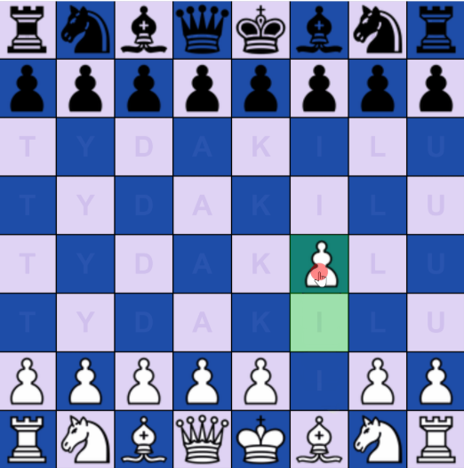
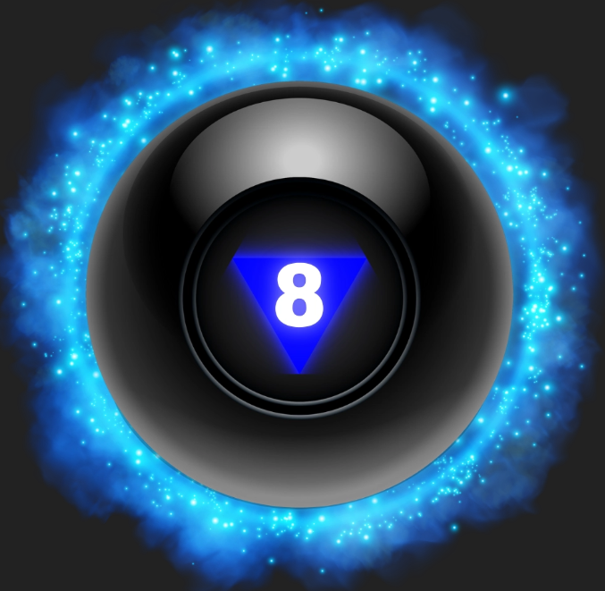

Portfolio
Java Chess Projekt
Das Java‑Projekt habe ich gemeinsam mit zwei Kollegen entwickelt (Java, JavaFX). Es bildet alle Schachfunktionen ab: Zugregeln, Schach/Schachmatt, Bauernumwandlung, En‑Passant, Rochade und weitere Spezialfälle. Während der Entwicklung stießen wir auf viele Herausforderungen zum Beispiel die korrekte Implementierung der Rochade‑Logik, Spezialzüge und Zustandsprüfungen doch durch gründliches Debugging und enge Teamarbeit konnten wir diese Probleme lösen. Am Ende sind wir sehr zufrieden mit unserem voll funktionsfähigen Schachprogramm und stolz auf das Ergebnis.

Swift — meine eigene App
Das Swift‑Projekt war meine Projektarbeit in der 3. Oberstufe: Ich entwickelte einen Magic‑8‑Ball namens Ask8. Ich habe 21 verschiedene Antworten erstellt und die App so programmiert, dass bei jeder Anfrage zufällig unterschiedliche Antworten ausgegeben werden. Bei dem Projekt habe ich viel über UI‑Gestaltung, Zufallslogik und eventgesteuerte Programmierung gelernt. Es hat mir großen Spaß gemacht und ich bin stolz auf das Ergebnis.
